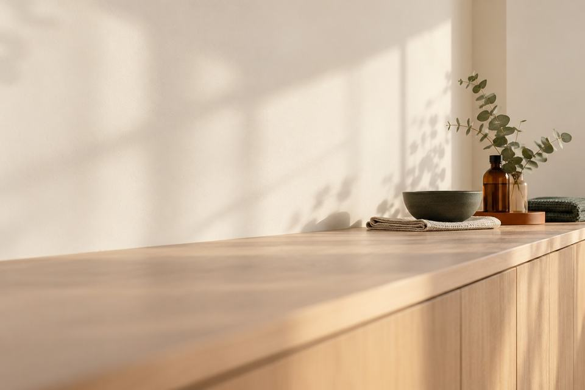
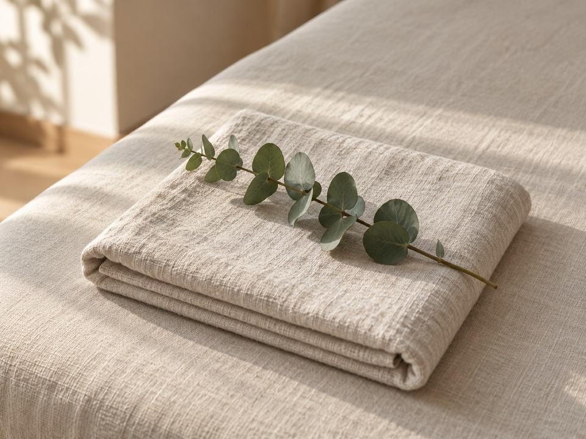
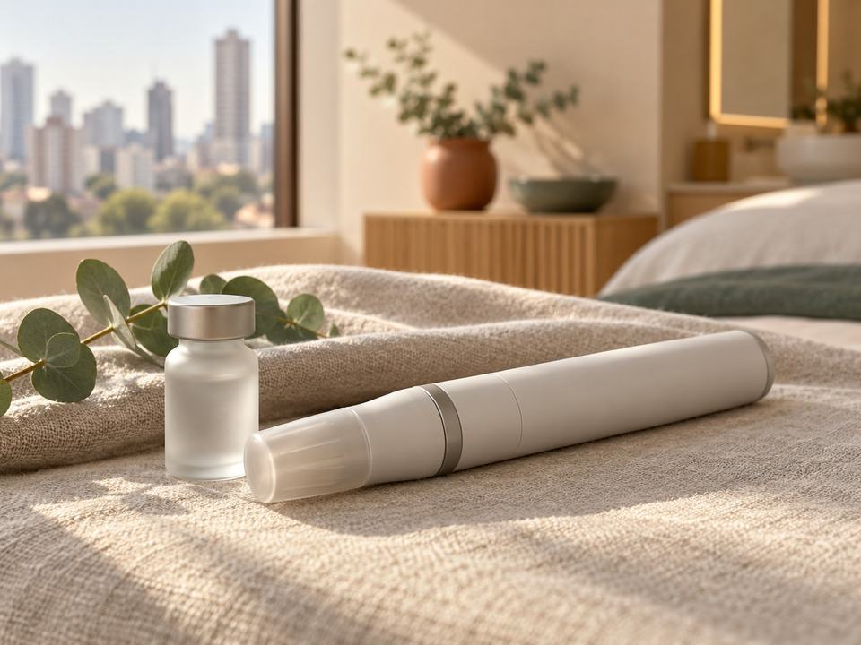
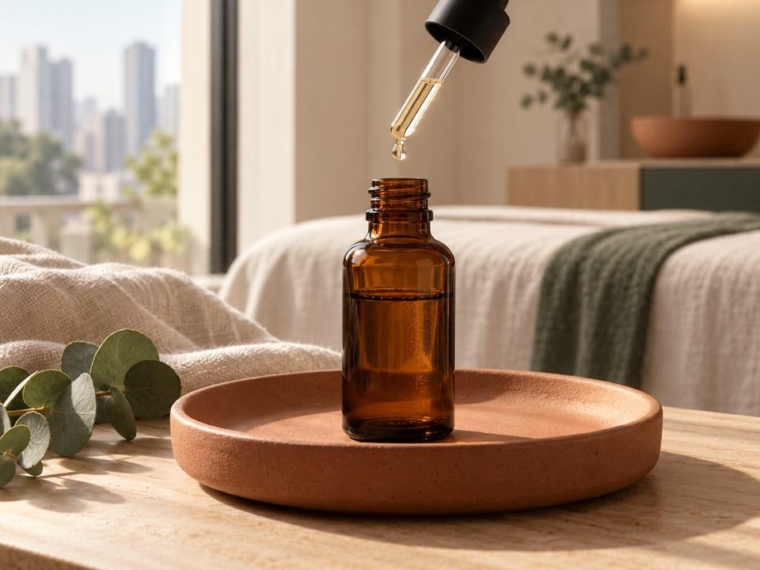
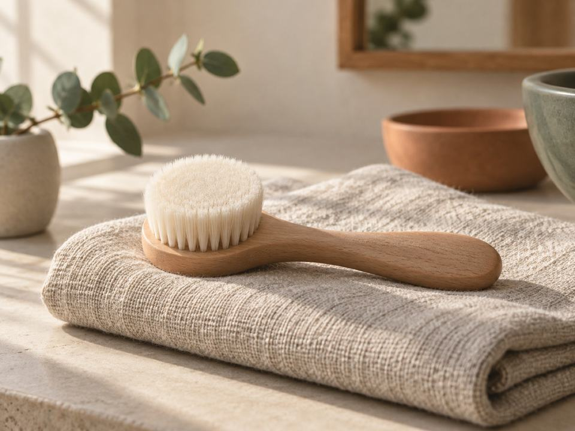
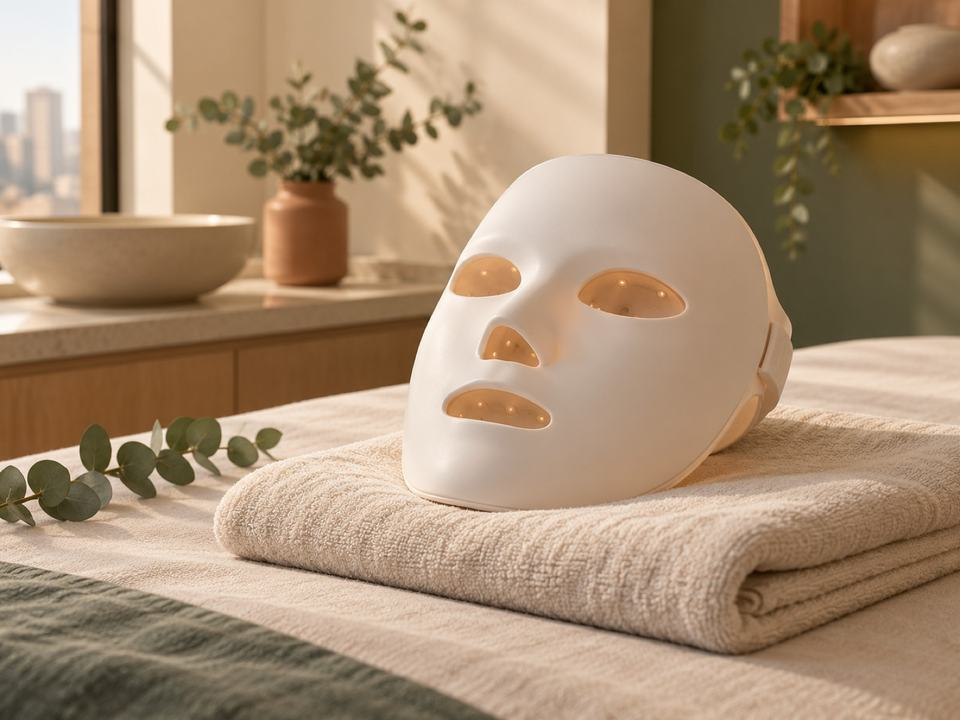
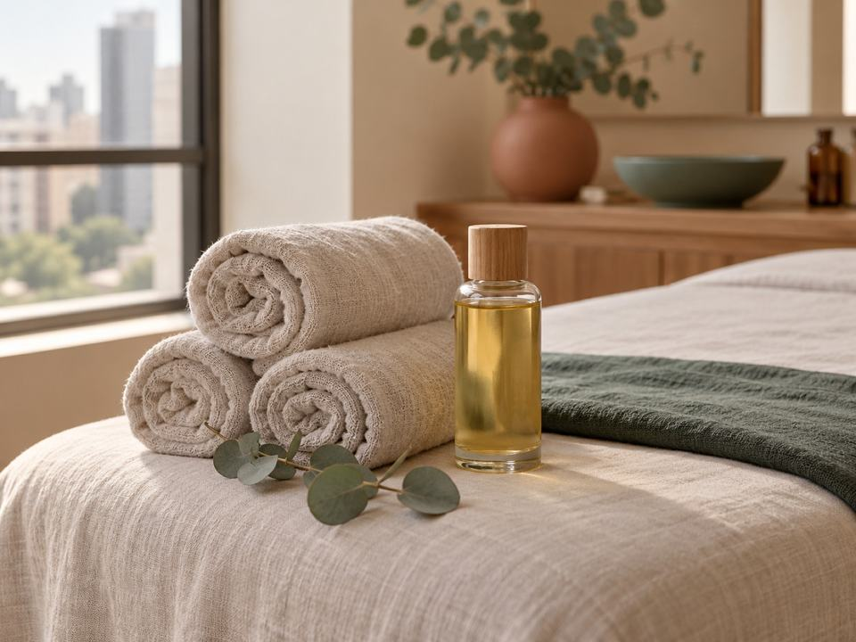
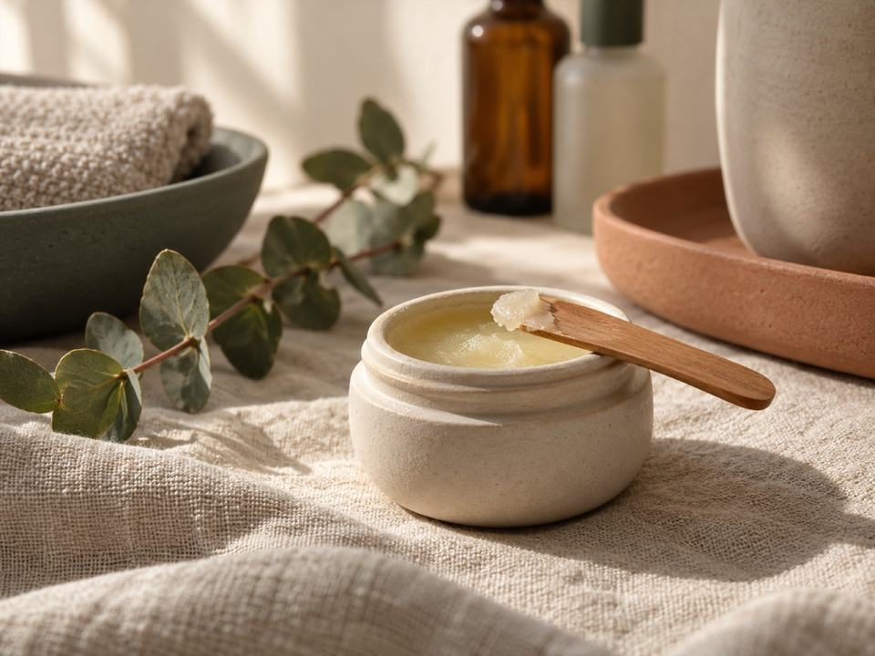

Biomédica estetaPinheiros
Procedimentos
Letícia Papp FernandesCRBM‑1 nº 51719
O que é cada procedimento e como é a sessão, antes de você agendar.


Vasinhos nas pernas
Para quem se incomoda com os vasinhos na perna.

Microagulhamento com skinbooster
Para quem nota linhas finas e poros.

Peeling químico e enzimático
Para quem percebe manchas na pele.

Limpeza de pele profunda
Para quem convive com cravos e oleosidade.

Hidratação profunda com LED
Cuidado mensal de hidratação para o rosto.

Drenagem linfática
Massagem manual para quem sente o corpo pesado.

Hidralips
Hidratação dos lábios, feita em sessão.
Por onde começar
Na dúvida, comece conversando
Conte pelo WhatsApp o que você gostaria de cuidar. A escolha do procedimento acontece na avaliação.
Tirar uma dúvidaComo é a sua sessão
O passo a passo
- 01
Você chama no WhatsApp
Você escreve e combina o primeiro horário.
- 02
Avaliação
A pele ou as pernas são observadas de perto.
- 03
O protocolo explicado
O que será feito e os cuidados de casa.
- 04
Sessão e cuidados depois
Durante e pós procedimento, pode perguntar.
Em poucas palavras
Pele e pernas, com calma.
Agendar
Agende a sua avaliação
A avaliação é o primeiro passo para qualquer procedimento da lista.
- Horários combinados pelo WhatsApp